Harmful self-pollination drives gynodioecy in European chestnut, a self-incompatible tree
American Journal of Botany
I am currently a postdoc at the University of Florida, in the Entomology and Nematology Department, joining the Pollinator Ecology and Conservation laboratory to work with Rachel Mallinger.
I am a geneticist ± entomologist. I study plant mating systems, pollinator ecology, and plant-pollinator interactions.
I am interested in trees in natural forests, but also in various crops cultivated for fruit production, such as chestnut and blueberry.
I use field observations, experiments, molecular analyses, and statistical models to study pollination. My research includes the study of the origin of gynodioecy, sexual interference in plants, the evolutionary advantage of duodichogamous species, pollination efficiency, and the design of highly productive, environmentally friendly orchards.
For more information, feel free to browse around or contact me via clement.larue@ufl.edu.
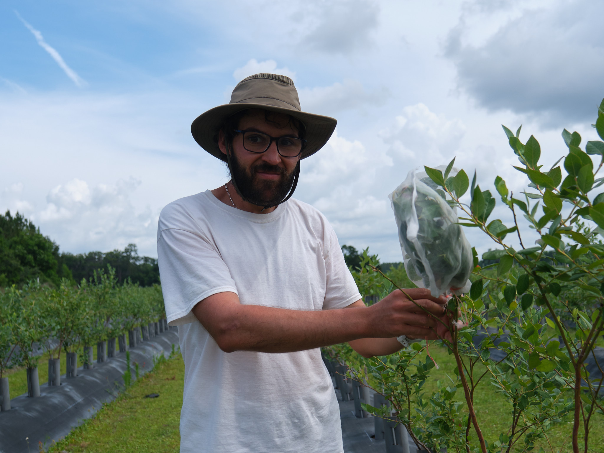
Estimating pollination success is essential when studying plant reproduction. To calculate this fruit set, i.e. the percentage of flowers that give fruit, we need to count the number of flowers in spring, and the number of fruits produced at harvest time.
Below are my positions ever since obtaining my PhD.
During my second postdoc, I work on blueberry pollination in Florida. I study the effect of (I) the diversity of pollinating insects and the frequency of their visits to flowers on pollination success, (II) the diversity and spatial distribution of cultivars on fruit production, and (III) pollen exchanges in blueberry fields using paternity analyses.
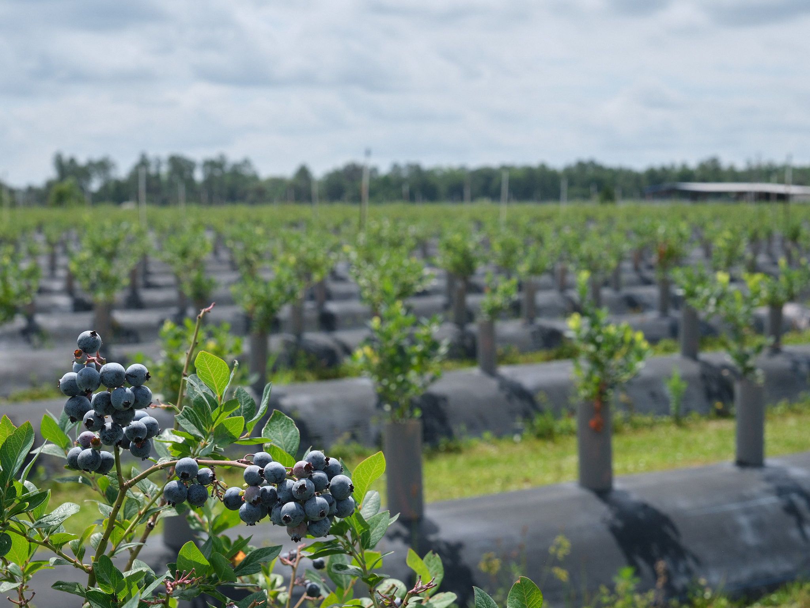The diversity of pollinators and the frequency of their visits to female flowers have a major impact on blueberry production.
During my first postdoc, I worked on chestnut pollination in south-west France. I (I) identified effective insect pollinators of chestnut, (II) studied the effect of orchard structure and composition on tree pollination success, and (III) estimated the quality of the pollination service in production orchards.
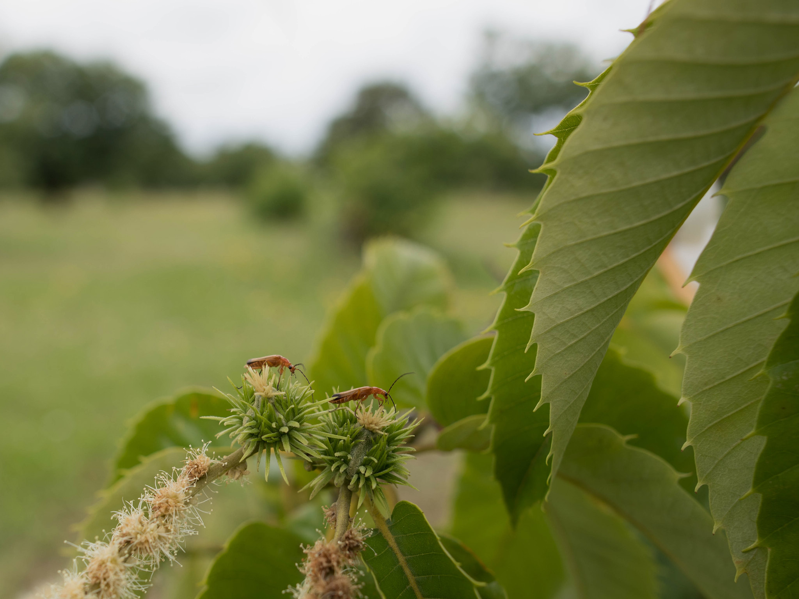Chestnut pollination has long remained a mystery. Without wild pollinating insects, and without diversified cultivars, chestnut production will be very low.
Subject: From pollination to seed set: chestnut as case study
at Biogeco, supervised by
Rémy Petit.
M2 Internship: Diversité et structure génétique spatiale d’une population de tilleuls : identification des espèces et des clones
at Biogeco, supervised by
Rémy Petit and
Alexis Ducousso.
M1 Internship: Les indices calculés à partir des données cynégétiques peuvent-ils être utiles à la gestion du lièvre d’Europe ?
at Office national de la chasse et de la faune sauvage, supervised by Bernard Mauvy and
Jean-Sébastien Guitton.
Internship: Étude d’une plante emblématique des Pyrénées en voie de disparition, Subularia aquatica : détermination de son régime de reproduction
at EDB, supervised by
Monique Burrus and
Nathalie Escaravage.
Doctoral thesis graduation ceremony. I am third from the right.
This section is divided into Publications, Talks, Posters, Software development and Awards.
American Journal of Botany
Acta Horticulturae
Acta Horticulturae
Annals of Forest Science
American Journal of Botany
Molecular Ecology
Botany Letters
Université de Bordeaux
Annals of Forest Science
Conservation Genetics Resources
Scientia Horticulturae
Botany Letters
Conservation Genetics Resources
Phytopathology
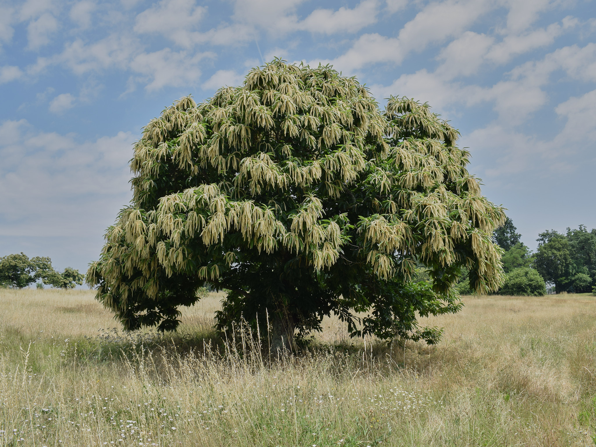
The male fertility of plants is highly variable. The quantity of pollen produced is more or less important, and some individuals no longer produce pollen anymore. In orchards, we need to be sure that the quantity and quality of pollen is sufficient, and that it is produced at the right time: i.e. when the female flowers of other individuals are receptive.
Steinmetz Hall - University of Florida, Gainesville, United States of America
VII International Chestnut Symposium - International Society for Horticultural Science, Lugo, Spain
Société Botanique de France, Paris, France [recording]
Vinitech Sifel, Bordeaux, France
GDR Pollineco, Paris, France
Vinitech Sifel, Bordeaux, France [recording]
Botany 2020 (online), Anchorage, Alaska
Centro de Investigación Forestal, Pontevedra, Spain
SPIPOLL, Cendras, France
GDR Pollineco, Montpellier, France
Vinitech Sifel, Bordeaux, France
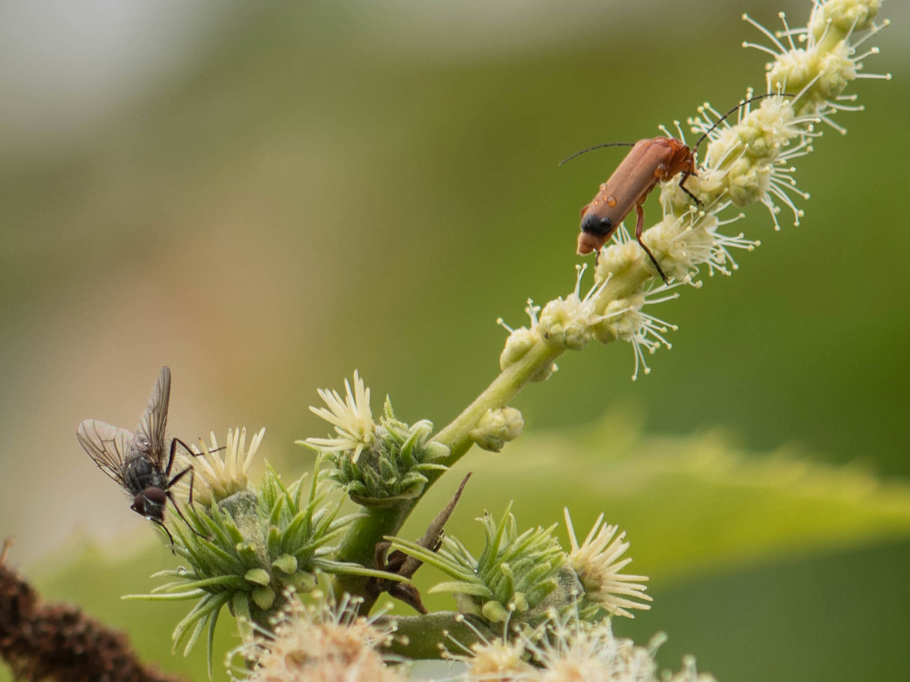
It is important to study the diversity of pollinating insects, i.e. insects that visit both male and female flowers. Chestnut trees are pollinated by Diptera and Coleoptera, but which species are the most efficient? To answer this question, it is crucial to characterize their pollen loads.
VII International Chestnut Symposium - International Society for Horticultural Science, Lugo, Spain
[PDF]
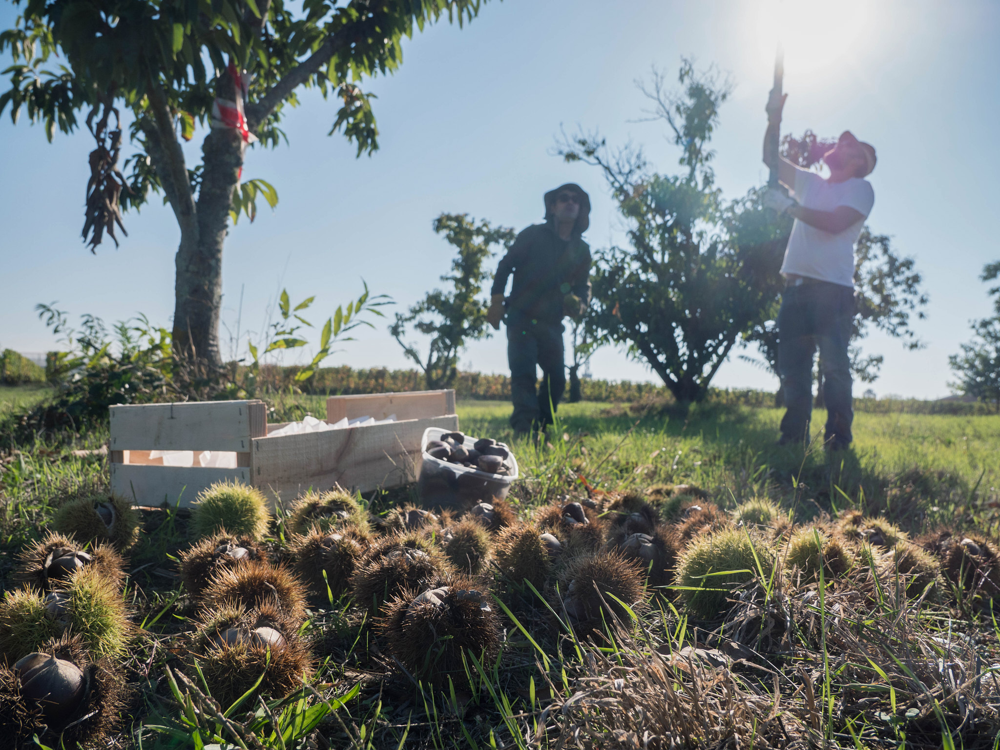
Large quantities of fruit are collected to study the determinants of pollination success. These fruits are then characterized (weight, sugar content, etc...) to study the effect of pollen on fruit quality.
Java program computing canopied areas covered by given buffer zone
Available on Github here
Visualization using JBotSim of the Monte Carlo method shown here
Java program analyzing Excel DNA data files for potential mismatches of parent/child associations
Available on Github here
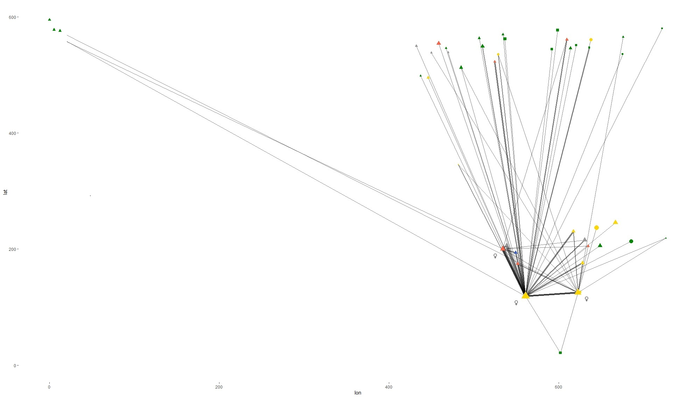
DNA is isolated from each harvested seed to perform thousands of paternity analyses, and statistical models are used to study compatibility between trees. These analyses enable us to study pollen dispersal distance, barriers to hybridization, or the effect of pollen production capacity on the number of seeds produced.
International Society for Horticultural Science Best poster presentation at VII International Chestnut Symposium [Online]
French Academy of Agriculture Best thesis in crop science [Online]
French Botanical Society Best article published in Botany Letters in 2020 [Online][PDF]
Dordogne Department Council 'Coup de coeur' prize [Online]
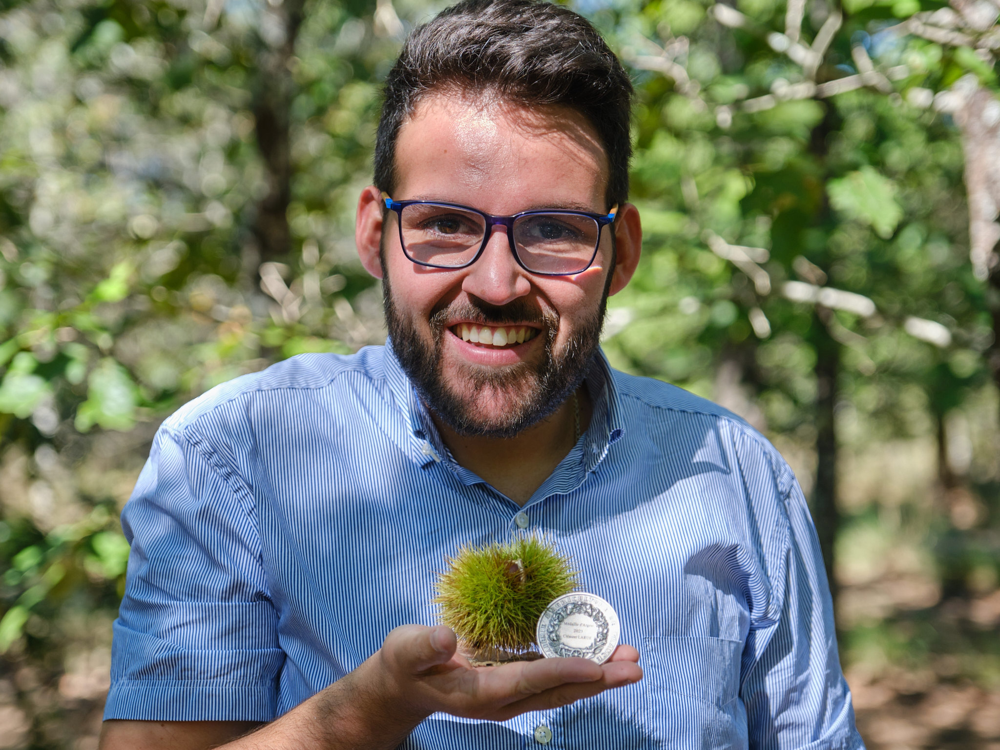
I am constantly striving to improve the quality of my work, in the hope of achieving perfection. In 2023, I was awarded the Dufrenoy silver medal for the best thesis in plant production. This medal rewards me for my dedicated work.
Here are the reports of the various students I have supervised, as well as publications addressed to fruit growers.
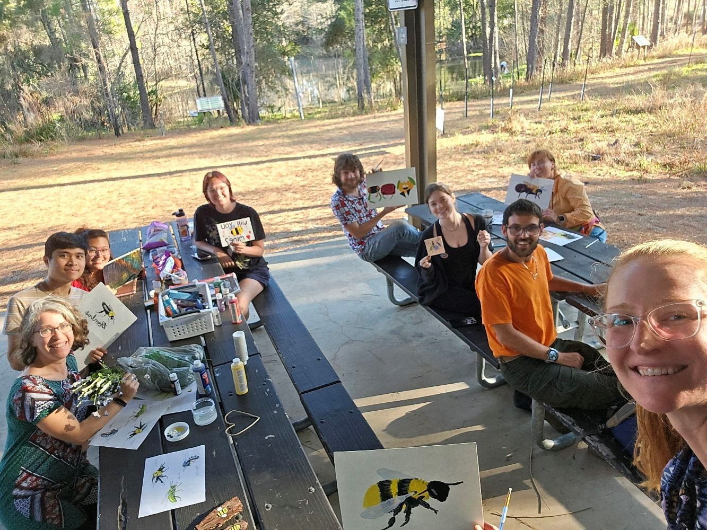
My #2024 US Team. This year I worked with several undergraduate and graduate students in my laboratory, and advised several PhD students. Fieldwork, data analysis, preparation of oral presentations and posters... The work is very diversified!
M1 BSA, Bordeaux
M2 BEE, Bordeaux
[PDF]
M1 BEE, Bordeaux
[PDF]
L3 BOE, Bordeaux
[PDF]
M2 BV, Lyon
[PDF]
M1 BEE, Bordeaux
[PDF]
L2 Biologie, Bordeaux
M2 AgroSup, Dijon
[PDF]
L3 B0E, Bordeaux
M1 EBP, Poitiers
[PDF]
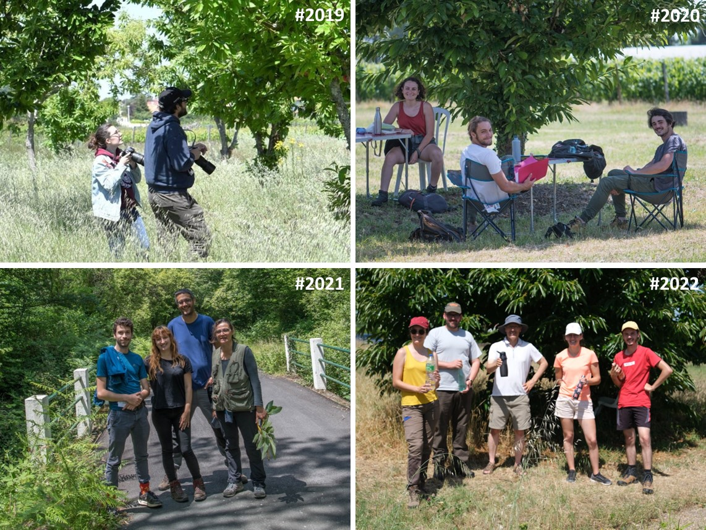
Here are some of my students. I love training students. They gave me invaluable help, and I hope I was a good teacher. Some of them are now doing their PhD thesis, I am proud of them.
UF/IFAS Extension
[Not available yet]
Connaissance du châtaignier #4
[PDF]
Connaissance du châtaignier #3
[PDF]
Connaissance du châtaignier #2
[PDF]
Connaissance du châtaignier #1
[PDF]
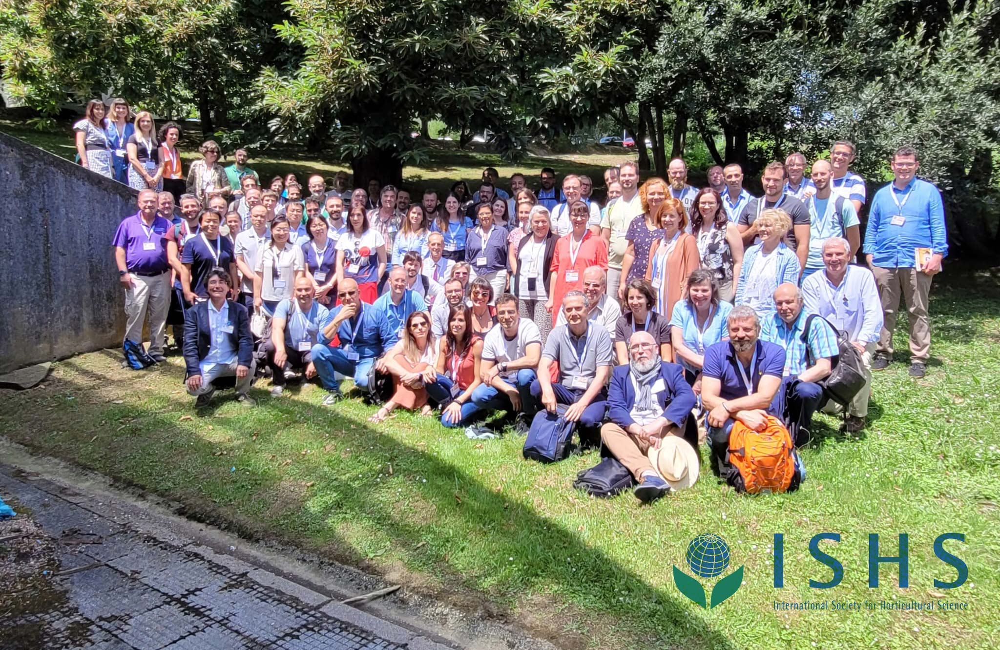
These major symposia are an opportunity to meet researchers as wall as fruit growers. I enjoy working with these growers, and for these growers. I try to publish popularized articles, to apply the latest findings in fields and orchards.
This section contains other useful information about my involvement in the world of science, or about my passions..
I enjoy reviewing scientific articles, as it helps me to keep abreast of the latest findings and innovations in my research areas. Below is a collection of journals I agreed to review for.
GDR Pollineco: co-organiser
BIOBAYES: introduction to Bayesian statistics
I am passionate about nature photography. I started by photographing birds and game species in the French forests. Then I developed my skills in macro photography and in UVIF photography, to see what is invisible to our eyes, but visible to insects.
I use Fujifilm equipment, Fuji X-H2 and Fuji X-H2s APS-C hybrid cameras, and mainly XF 80mm F2.8 R LM OIS WR Macro and XF 100-400mm F4.5-5.6 R LM OIS WR lenses.
I develop my pictures with Capture One software.
My new moto is "Mens sana in corpore sano". Even though I spend a lot of time in the lab, I do triathlons (Ironman 70.3 fan), and I take the time to cook healthy meals. I also do competition pistol shooting, despite the noise and the flame, shooting is mathematics! When I am not outside (which is rare), I love to read science fiction and fantasy books, or I am in my workshop bulding "things", I like manual work!
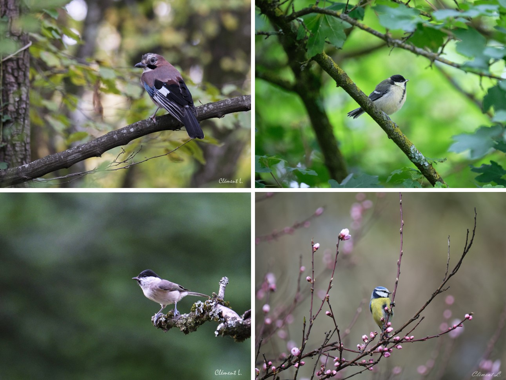
Here are some of my photos, showing an Eurasian jay (top left), a Great tit (top right), a Marsh tit (bottom left) and a Eurasion blue tit (bottom right).